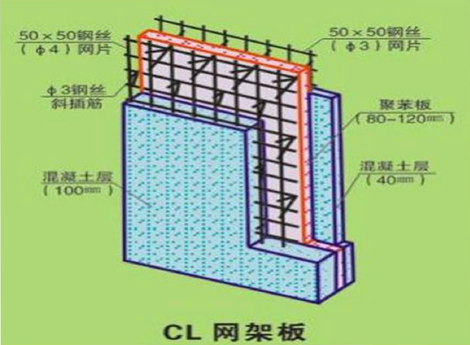
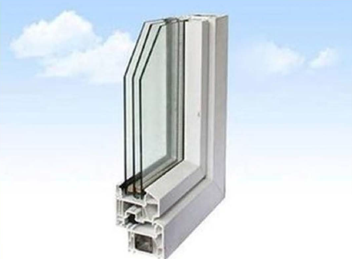
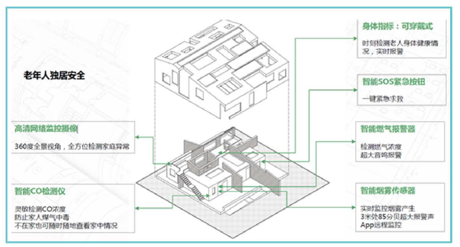
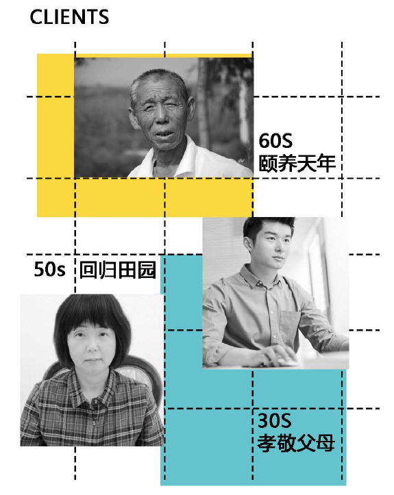
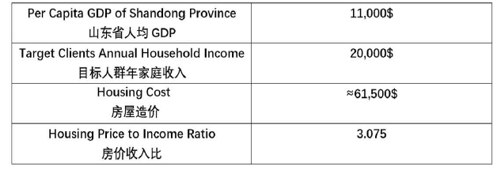
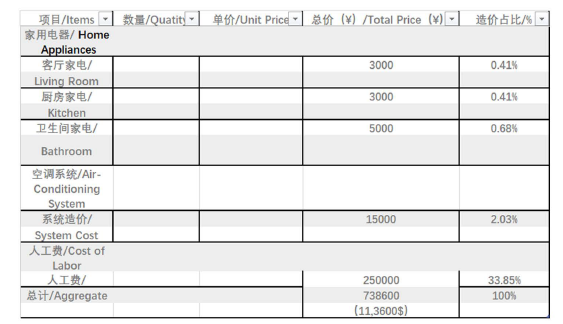

设计优势
外部
低调的外形
低调和极简设计可以最大限度地将建筑融入周围环境，使建筑能够更好地发挥其作为H服务者"的作用。同时，摒弃夸张、不必要的装饰也可降低成本，进一步提高市场竞争力。
优美的景观
建筑立面上有大量的窗孔，可以使室内的美景尽收眼底，实现室内外空间的和谐统一。打开窗户的变化也丰富了建筑的空间体验，可以增加使用者的生活享受。此外，内庭院不仅为室内提供了良好的光源，而且还提供了通凤和通风的帮助。它也消除了室内空间的阻塞感。

内部
建筑功能完整。建筑类型有车库、起居室、餐厅、卫生间、厨房、家庭办公室、设备室和三间不同的卧室。在数量上每个房间的大小都非常宽敞。此外几乎每个房间都配备有卫生间。
无障碍设计。我们的主要目标是退休或退休老人，所以无障碍设计是非常必要的。例如，在建筑物的入口处安装了一个坡道，以方便轮椅进入。卫生间的尺寸应满足轮椅的转动半径等。

设备与材料
材料
CL墙体
复合轻质建筑系统，高压力、高强度石膏板作为一种建筑用混凝土永久性模板(代苔钢模板、抹灰)，和内墙是高压力和高强度石膏空心砌块。结梅的隔热层具有良好的耐久性和耐火性能;建筑保温与结梅同寿命。

三玻两腔节能玻璃门窗
三玻两腔节能玻璃门窗在防噪音、保温隔热等方面，比真他各种玻璃门窗拥有更突出的性能。并且造价低，重量轻。

设备
中央空调
中央空调具有制冷均匀舒适度高、节省空间外形美观、能耗比高节能强的特点。

智能家居
智能家居是以住宅为平台，利用综合布线技术、网络通信技术、安全防范技术、自动控制技术、啬视频技术将家居生活有关的设施集成，向建高效的住宅设施与家庭日程事务的管理系统，提升家居安全性、便利性、舒适性、艺术性，并实现环保节能的居住环境。

市场吸引力
可居住性
外部空间
我们在建筑物的外部增加了一个有孔的盒子，建造了一个半室外灰色空间。这样的灰色空间可以鼓励户外活动。一年中有将近300天的阳光，这对于户外体验是非常重要的。这些阴凉的地方鼓励居民在户外多花些时间。最重要的是，我们的目标害户可以直接接触新鲜空气和自然元素，并在室内有避难所和安全感。当招待客人时，开放性有助于室内和室外娱乐。
内部空间
我们充分利用自然光，房间内每一个角落都有自然采光。建筑外面的box在顶部巧妙地开洞，为所有需要充足太阳光的空间(如老年人卧室、起居室)提供充足的竖向采光。
很多重要的身体功能取决于它的睡眠-觉醒周期、激素释放军口温度。具有自然和健康的节奏，家居设计可以防止许多疾病。我们的设计试图降低肥胖，糖尿病，抑郁症和其他季节性情感障碍。人们经常发现，这些都是由一种不正常的节奏搅动的。
功能空间
多个庭院的设置加强了采光以及交流的产生。庭院的位置与卧室的位置相结合，为卧室提供竖向采光。

智能家居系统
实现了基于移动设备与可穿戴设备的智能家居控制，方案部分采用最新的智能家居2.0系统。智能家居系统根据大数据分析结果，可以智能化调节室内环境，使人在室内能始终处于舒适的状态。其安全系统非常适合于老年人使用。
(1) 舒适性
"人员安全"：老人、小孩的室内安全得到保障，家庭财产不会受到侵害。
"系统安全"：智能家居能源管理系统健康有序运作，信息物理融合安全。
"隐私安全"：智能家居系统自带信息安全防御模式，杜绝因系统的数据采集、处理、储存而造成隐私泄露。
(2) 节能措施
留能家居系统可以进行能源消耗的实时监控，自动计算合理的资源配比，优化系统运作方案，进行能源的最优调度，实现能源最大利用效率。

MARKET POTENTIAL
可建造性
中国的乡村设计已经开始发生变化，随着社会的进步，政策的倾斜等以及经济的提升，村民认知的提高，乡村民居的建设变得越来越注重设计。在农村各家各户的宅基地上，村民可以结合最新的理念和设计，建设自己的家园。我们的"归家"项目也期望通过简便的施工流程，实惠的造价达到良好的可推广性。
"归家"项目的所有材料和设备都可以在一般建材市场上买到，这样房子就可以在需要的地方立即建造。图纸和施工规范提保证了建造质量和细节，使我们的承包公司能够产生准确的，详细的建筑成本估算，一切都是流程化的。
极具竞争力的房子
CL墙体作为一个有效建筑节能墙体解决方案，以及它良好的适应性、高普及度、合适的价格，目前在节能建筑建设中极具有竞争力，得到了很多青睐。
在"归家"中，我们的外墙和内墙都安装了高强度的高压石膏板和石膏块的CL墙体，取代了旧的、陈旧的钢框架使用方式。并采用了装配式建造的工艺，从而节约了装配成本和缩短了施工时间。
使用这种材料还有许多其他优点，例如：本产品具有不可燃、日及音、生物降解等特点，具有较高的机械强度和热质量，耐水、耐湿性强，采用环保工艺生产等等。
关于开窗
"归家"项目采用了很多开窗设计，但与众不同的是，本建筑采用了三层玻璃窗，这是从双层玻璃窗技术往上迈出的另一步一一三层玻璃和两层隔板。尽管它们比双层玻璃窗要重得多，也稍微贵一点，但它在性能上有着巨大的优势。三层玻璃窗可以便能耗等级降低20-30%。此外I 3层玻璃之间的间隔与普通窗户中使用的处理方法是不同的。三层玻璃在密闭处使用高质量的硅胶，而才紫外线氧化，并在其中填充了氧气，保证了更高的能源效率。最后，三层玻璃也显著降低了室内的噪音水平，提高了歌声水平。三层玻璃的适用范围极广，而且安装方式相同，值得推荐使用。
目标人群
我们的目标人群是退休和即将退休的城市工薪阶层。"归家"是一个多功能的房子，它给传统的中国农村家庭带来了现代的生活，该设计为满足各个年龄层的需求提供了便利。对许多老年夫妇来说，悠闲的田园生活比喧嚣的、快节奏的城市生活更有吸引力。
中国的城市化进程十分迅速，但是对于那些在城市中工作了几十年，即将退休的老人来说，相比于嘈杂快节奏的城市生活，悠闲自在的田园生活更具吸引力。11采菊东篱下，悠然见南山"的景象是许多中国人希望达到的生活境界。
Income of Target Clients/目标人群收入
山东省2016年人均GDP为6.87万元，折合1.1 万美元。山东省2017年在岗职工平均工资6.4万(1万美元) ，家庭年收入约为2万美元
人群画像
1. 王大爷，在德州做了二十年小生意，有点小钱。城里的房价太高，住着也不自在，年纪大了，还是想清静自在一点。
2. 小李，在济南上班。前几年已经在城里买了房，现在想给在乡村的父母提供一个更好的生活条件。
3. 刘阿姨，老家在德州，城里的房子准备留给儿子。即将退休的她想回老家享受轻松无压力的生活。


MARKET POTENTIAL/市场分析
Cost Estimate

